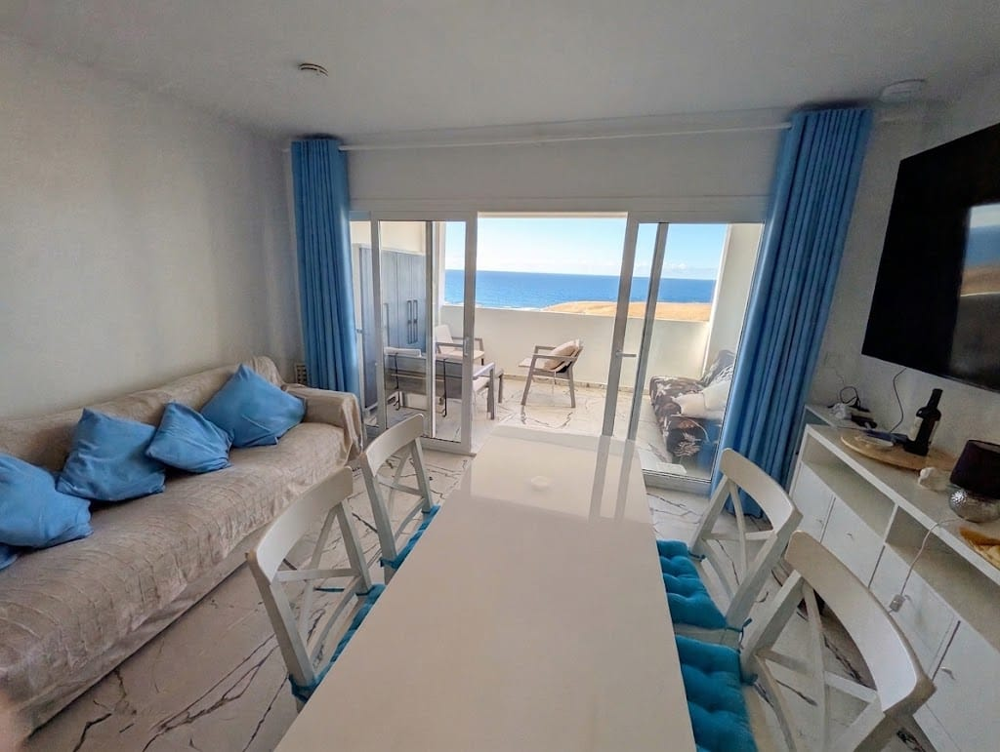
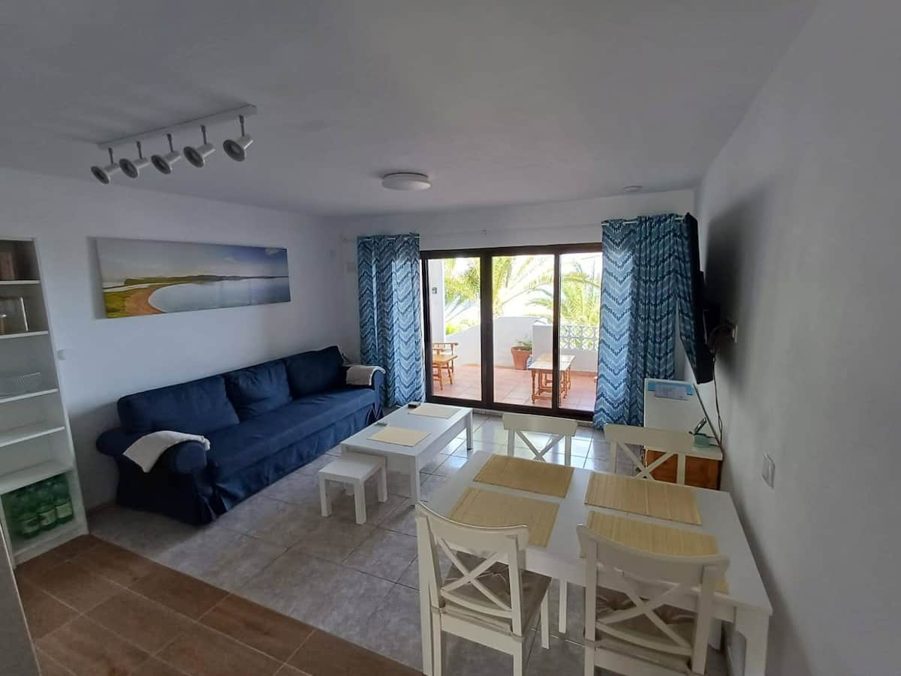

My Asia
3 huéspedes · 2 dormitorios · 3 camas · 1 baño
Apartamento luminoso y moderno en el tranquilo complejo Aguas Verdes, con balcón soleado, wifi rápido, cocina equipada y acceso a la piscina.
Ver disponibilidad en Airbnb ↗Viviendas vacacionales en la costa oeste de Fuerteventura gestionadas por My Fuerta Ltd.

3 huéspedes · 2 dormitorios · 3 camas · 1 baño
Apartamento luminoso y moderno en el tranquilo complejo Aguas Verdes, con balcón soleado, wifi rápido, cocina equipada y acceso a la piscina.
Ver disponibilidad en Airbnb ↗
4 huéspedes · 2 dormitorios · 4 camas · 1 baño
Refugio tranquilo en la costa oeste virgen de Fuerteventura, dentro de un parque natural protegido, con vistas panorámicas al Atlántico y puestas de sol.
Ver disponibilidad en Airbnb ↗